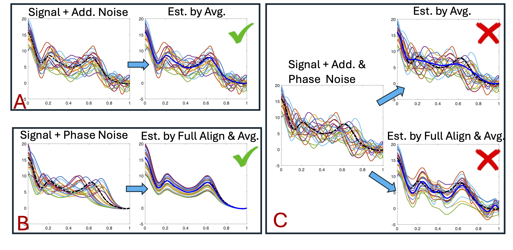
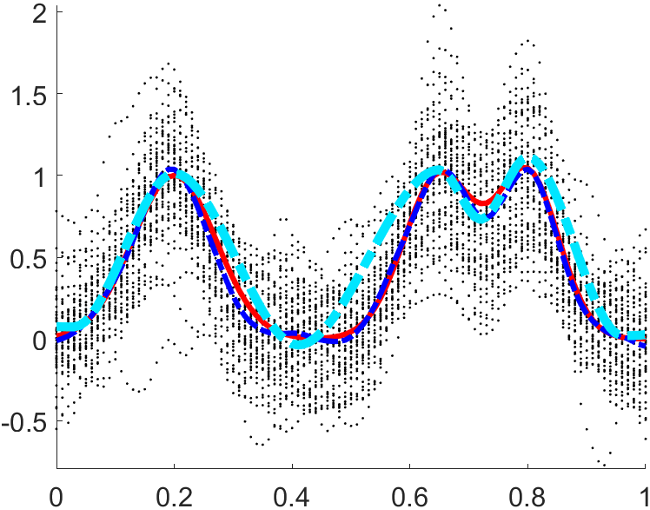
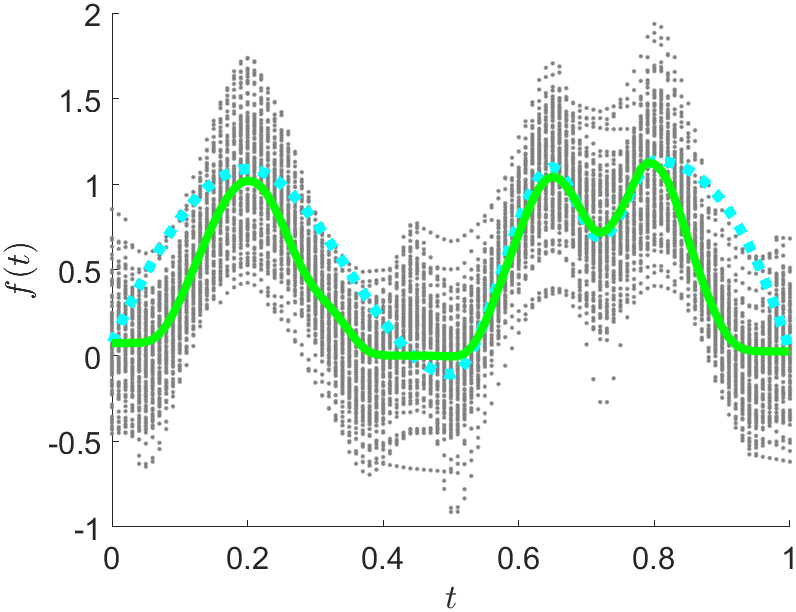
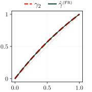
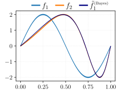
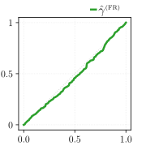
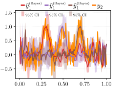
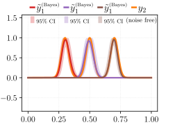

Function Alignment In Presence of
Phase and Amplitude Noises
Ph.D Dissertation Defense
Department of Statistics, Florida State University
2025-06-20
Acknowledgement
- I am deeply grateful to Dr. Anuj Srivastava for his guidance throughout this research.
- Special thanks to Dr. Sutanoy Dasgupta, the co-author, for the research ideas and valuable assistance.
- I deeply appreciate Dr. Eric Klassen and Dr. Xiulin Xie for their support and willingness to serve as my committee members.
- I am sincerely thankful to my major advisor, Dr. Wei Wu, for his unwavering support, warm understanding, and encouragement in shaping my work and future path.
Thank you all for your support!
Motivation
- Two sources of variation:
- Phase: temporal shifts of a function.
- Amplitude: changes in magnitude of a function.
- Problems:
- Misalignment of phase leads to distorted key statistical summaries.
- Function alignment becomes challenging when both phase and amplitude variations are present.
- Goal:
In presence of both phase and amplitude variations,
\qquad(1) align signals and (2) estimate the underlying signal robustly.
Early Works (will be updated)
Old Works in f-space with error
…Fisher-Rao method with penalty
…Tucker 2021
Projects: Two Paths Forward
- On top of the SRVF framework, we introduce a visual tool to explore the effects of different penalty weights on function alignment.
- Persistent Peak Diagrams (PPD):
- Visualize how the alignment changes with varying penalty weights.
- Track the peaks in the aligned mean function to choose optimal penalty weights based on the stability of these peaks.
- A probabilistic framework with prior distribution provides a flexible function-alignment under noisy observations.
- Enables the incorporation of prior knowledge
- Allows multiple plausible alignments
- We enable a more robust registration under noisy observations than previous SRVF-based approaches.
Project 1
Signal estimation in the presence of phase and amplitude noises via PPD
Phase and Amplitude Variation Model
- Multiplicative noise: \quad {\color{green}c_i} \in \mathbb{R}^+ and i.i.d. with \mathbb{E}[c_i] = 1.
-
Warping noise:
A warping function, {\color{blue}\gamma_i} \in \Gamma, controls the phase variation. Here, \Gamma is a diffeomorphism forming a group such that \Gamma = \{\gamma:[0,1]\to[0,1] \mid \gamma(0) = 0, \gamma(1) = 1, \dot \gamma > 0\}, We assume \{\gamma_i\}_{i=1}^n is centered at \gamma_{\mathrm{id}}. - Additive smooth noise function: {\color{magenta}\epsilon_i} \in \mathbb{L}^2, random smooth function with \mathbb{E}[\epsilon_i(t)] = 0.
Generative Model Comparison
Penalized Optimization Framework
Given SRVFs \{q_i\in\mathbb{L}^2\mid i=1,...,n\}, and penalty weight, \lambda, the penalized elastic alignment is given by: \min_{\bar{q} \in \mathbb{L}^2} \left[ \sum_{i=1}^n \left( \min_{c_i, \mathbb{R}, \gamma_i\in \Gamma} \left( \| \bar{q} - c_i (q_i \star \gamma_i)\|^2 + \lambda \mathcal{R}(\gamma_i) \right) \right) \right] \ .
where (q\star\gamma) = (q\circ\gamma)\sqrt{\dot\gamma}, and \bar{q}\in\mathbb{L}^2 is a template function. Then, the optimal warping given \lambda is as follows: \gamma_{\lambda,i}^* = \underset{\gamma_i \in \Gamma}{\mathrm{argmin}} \left(\| q - c_i^* (q_i \star \gamma_i) \|^2 + \lambda \mathcal{R}(\gamma_i) \right). The quantity of interest is the partial elastic mean : {\color{blue}\hat{g}_\lambda = \frac{1}{n} \sum_{i=1}^n f^*_{\lambda, i}} \quad \textsf{where} \quad f^*_{\lambda, i} = f_i \circ \gamma_{\lambda,i}^*
Penalized Elastic Signal Alignment (PESA)
Sequential alignment algorithm
Given the candidate penalty weights \{\lambda_1,...\lambda_L = \lambda_{\mathrm{max}}\}, we compute the partial elastic mean \hat{g}_\lambda and update the alignment sequentially.
- Computation order of the penalty: \lambda_L,\lambda_{L-1},…,\lambda_1
- At step k: compute \hat{g}_{\lambda_k} using the previous steps alignment.
- Sequentially progress alignment from no alignment to the fully elastic alignment.
\textsf{\textbf{Input:}}
\textsf{\textbf{Output:}}
\qquad\qquad q_i \leftarrow \begin{cases} \mathtt{srvf}(f_i) & \textsf{\text{if }} k = L \\ \mathtt{srvf}(\tilde{f}_{\lambda_{k+1}, i}) & \textsf{\text{otherwise}} \end{cases}\ \ , \qquad c_i^* \leftarrow 1
\qquad \textsf{\textbf{end}}
\qquad \bar{q} \leftarrow \begin{cases} \frac{1}{n}\sum q_i & \textsf{\text{if }} k = L \\ \bar{q}_{\lambda_{k+1}} & \textsf{\text{otherwise}} \end{cases}
\qquad \textsf{\textbf{for }} i = 1 \textsf{\textbf{ to }}n:
\qquad\qquad q_i \leftarrow \begin{cases} {\color{red}\mathtt{srvf}(f_i)} & \textsf{\text{if }} k = L \\ \mathtt{srvf}(\tilde{f}_{\lambda_{k+1}, i}) & \textsf{\text{otherwise}} \end{cases}\ \ , \qquad c_i^* \leftarrow 1
\qquad \textsf{\textbf{end}}
\qquad \bar{q} \leftarrow \begin{cases} {\color{red}\frac{1}{n}\sum q_i} & \textsf{\text{if }} k = L \\ \bar{q}_{\lambda_{k+1}} & \textsf{\text{otherwise}} \end{cases}
\qquad \textsf{\textbf{for }} i = 1 \textsf{\textbf{ to }} n:
\qquad\qquad \gamma_{\lambda_k,i}^* \leftarrow \mathrm{argmin}_\gamma \big[ \|\bar{q} - c_i^*(q_i \circ \gamma)\|^2 + \lambda_k \mathcal{R}(\gamma) \big]
\qquad\qquad f_i^* \leftarrow \tilde{f}_{\lambda_{k-1}, i} \circ \gamma_{\lambda_k,i}^* , \quad q_i^* \leftarrow \mathtt{srvf}(f_i^*) , \quad c_i^* \leftarrow \frac{\langle \bar{q}\ \, q_i^* \rangle}{\langle q_i^*,\ \ q_i^* \rangle}
\qquad \textsf{\textbf{end}}
\qquad\qquad \textsf{\textbf{if }} \epsilon > tol: \bar{q} \leftarrow \bar{q}^*
\,\, \textsf{\textbf{end repeat}}
\qquad \textsf{\textbf{for }} i = 1 \textsf{\textbf{ to }} n:
\qquad\qquad q_i \leftarrow \begin{cases} {\color{red}\mathtt{srvf}(f_i)} & \textsf{\text{if }} k = L \\ \mathtt{srvf}(\tilde{f}_{\lambda_{k+1}, i}) & \textsf{\text{otherwise}} \end{cases}\ \ , \qquad c_i^* \leftarrow 1
\qquad \textsf{\textbf{end}}
\qquad \bar{q} \leftarrow \begin{cases} {\color{red}\frac{1}{n}\sum q_i} & \textsf{\text{if }} k = L \\ \bar{q}_{\lambda_{k+1}} & \textsf{\text{otherwise}} \end{cases}
\qquad \bar{\gamma}^{-1} \leftarrow (\frac{1}{n} \sum \gamma_{\lambda_k, i}^*)^{-1}\ \ , \qquad \bar{q}_{\lambda_k} \leftarrow \bar{q} \circ \bar{\gamma}^{-1} (centering)
\textsf{\textbf{end}}
\qquad \textsf{\textbf{for }} i = 1 \textsf{\textbf{ to }} n:
\qquad\qquad q_i \leftarrow \begin{cases} \mathtt{srvf}(f_i) & \textsf{\text{if }} k = L \\ {\color{blue}\mathtt{srvf}(\boldsymbol{\tilde{f}_{\lambda_{k+1}, i}})} & {\color{blue}\textsf{\text{otherwise}}} \end{cases}\ \ , \qquad c_i^* \leftarrow 1
\qquad \textsf{\textbf{end}}
\qquad \bar{q} \leftarrow \begin{cases} \frac{1}{n}\sum q_i & \textsf{\text{if }} k = L \\ {\color{green}\boldsymbol{\bar{q}_{\lambda_{k+1}}}} & {\color{green}\textsf{\text{otherwise}}} \end{cases}
\qquad \bar{\gamma}^{-1} \leftarrow (\frac{1}{n} \sum \gamma_{\lambda_k, i}^*)^{-1}\ \ , \qquad \boldsymbol{\bar{q}_{\lambda_k}} \leftarrow \bar{q} \circ \bar{\gamma}^{-1} (centering)
\qquad \textsf{\textbf{for }} i = 1 \textsf{\textbf{ to }} n: \qquad \boldsymbol{\tilde{f}_{\lambda_k, i}} \leftarrow f_i^* \circ \bar{\gamma}^{-1} (alignment)
\qquad \hat{g}_{\lambda_k} \leftarrow \frac{1}{n} \sum \tilde{f}_{\lambda_k, i} (aligned mean)
{\color{black}\textsf{\textbf{end}}}
\qquad \textsf{\textbf{for }} i = 1 \textsf{\textbf{ to }} n:
\qquad\qquad q_i \leftarrow \begin{cases} \mathtt{srvf}(f_i) & \textsf{\text{if }} k = L \\ {\color{gray}\mathtt{srvf}(\tilde{f}_{\lambda_{k+1}, i})} & {\color{gray}\textsf{\text{otherwise}}} \end{cases}\ \ , \qquad c_i^* \leftarrow 1
\qquad \textsf{\textbf{end}}
\qquad \bar{q} \leftarrow \begin{cases} \frac{1}{n}\sum q_i & \textsf{\text{if }} k = L \\ {\color{gray}\bar{q}_{\lambda_{k+1}}} & {\color{gray}\textsf{\text{otherwise}}} \end{cases}
\qquad \bar{\gamma}^{-1} \leftarrow (\frac{1}{n} \sum \gamma_{\lambda_k, i}^*)^{-1}\ \ , \qquad \bar{q}_{\lambda_k} \leftarrow \bar{q} \circ \bar{\gamma}^{-1} (centering)
\qquad \textsf{\textbf{for }} i = 1 \textsf{\textbf{ to }} n: \qquad \tilde{f}_{\lambda_k, i} \leftarrow f_i^* \circ \bar{\gamma}^{-1} (alignment)
\qquad \hat{g}_{\lambda_k} \leftarrow \frac{1}{n} \sum \tilde{f}_{\lambda_k, i} (aligned mean)
{\color{gray} \textsf{\textbf{end}}}
Persistent Peak Diagrams (PPD)
Significance of Peaks
The significance of a peak is determined by its relative curvature at the peak location and a predefined threshold value.
Persistence of Peaks
Persistence measures how long a peak remains significant as the penalty weight \lambda varies.
A peak is considered persistent if its classification remains consistent with that of the most persistent peak across values of persistence measurements.
Selection of \lambda via PPD
- Scatter points: Partially aligned functions, \{ùëì^*_{\lambda^*,ùëñ}\}
- Blue Curve: Mean of partial elastic mean, \hat{g}_{\lambda^*}
- Cyan Curve: Initial shape function, \hat{g}_{\mathrm{init}}
- Red Curve: Ground truth, g


- Magent line: \lambda^*, the selected penalty weight.
Estimation of the underlying signal g
Signal estimation of g is feasible based on the \hat{g}_{\lambda^*}
Results
Will be updated soon. 1 or 2 examples.
Project 2
Bayesian registration of functions with compositional and additive noises
Introduction
To earn the robustness of the alignment process, our approach resorts to:
Bayesian model to quantify the uncertainty in the alignment process.
Centered log-ratio representation of warping representations to achieve mapping to a linear inner-product space via isometrically isomorphism.
Use of the \mathbb{L}^2 metric in the original function space (\boldsymbol{f}-space) to achieve robustness against additive noise.
Registration Frameworks
There are three main distinctions in our registration framework compared to previous works:
Deterministic vs Bayesian Method
SRVF vs CLR representations of \gamma
SRVF-space (q-space) vs Original-function-space (f-space)
Registration Frameworks
(1)\quadDeterministic vs Bayesian Method
A deterministic method such as (e.g., dynamic programming) finds a single optimal warping function \gamma that maximizes the likelihood.
(flexibility issue)
- It does not quntify the uncertainty in the alignment process.
- It cannot capture the multiple plausible alignments.
(computational cost issue)
- DP has quadratic time complexity, making it inefficient for large numbers of discrete points.
- DP does not account for smoothness, often resulting in undesirable or jagged warping paths.
As an alternative of deterministic method, we use Bayesian framework which mainly takes advantages by allowing:
A comprehensive exploration of the warping function parameter space.
Principled uncertainty analysis via posterior inference (e.g., the discovery of multiple plausible alignments)
Incorporation of the prior information of warping functions.
Registration Frameworks
(2)\quadSRVF vs CLR representations of \gamma
Previous Bayesian registration approaches (Lu et al. (2017) and Tucker et al. (2021)) maps the warping functions to the SRD manifold \mathbb{S}^+_{\infty} = \left\{ q_\gamma \in \mathbb{L}^2 \,\middle|\, q_\gamma(t) \geq 0,\; \int_0^1 q_\gamma^2(t)\, dt = 1 \right\} \qquad \text{where } \quad q_\gamma(t) = \mathtt{srvf}(\gamma).
Gaussian Process (GP) prior for warping functions on the tangent space at \gamma_{\mathrm{id}}
Happ et al. (2019) and Ma et al. (2024) addressed the SRVF representation may cause bias and inefficience in computation in posterior inference due to:
- geometric distortion
- improper posterior sampling
- Centered log-ratio transformation was first introduced by Egozcue at el.(2006)
- Ma et al. (2024) proposed the use of CLR for warping function representation.
h(t) := \psi(\gamma)(t) = \log(\dot\gamma(t)) - \int_0^1 \log(\dot\gamma(s))ds
where \Gamma_1 \subset \Gamma is a bounded subset and H(0,1) is an Euclidean space under \mathbb{L}^2 norm.
\Gamma_1 = \left\{ \gamma: [0,1] \rightarrow [0,1] \mid \gamma(0) = 0, \gamma(1) = 1, 0 < m_\gamma<\dot\gamma(t) < M_\gamma < \infty\right\}.
H(0,1) = \left\{ h \in \mathbb{L}^2([0,1]) \;\middle|\; \int_0^1 h(t)\,dt = 0,\; -\infty< m_h < h(t) < M_h < \infty \right\},
CLR isometrically isomorphically maps warpings to a linear inner-product space, enabling standard statistical analysis.
CLR avoids the issues of SRVF’s geometric distortion and improper sampling. (example)
Registration Frameworks
(3)\quad q-space vs f-space
It aligns functions by using \mathbb{L}^2 metric in the SRVF space (\boldsymbol{q}-space)
(robustness issue) It makes more sensitive to additive noise
- The SRVF transformation is a function of the first derivative, which is sensitive to noise in the original function space. (example)
Previous approaches resorted to:
pre-smoothing data but a mere smoothing individual functions may cause over- or under-smoothing.
penalized elastic alignment but to choose a proper penalty weight becomes a sensitive issue.
We perform alignment directly in the original function space rather than SRVF space.
The pinching effect arises when \dot{\gamma}(t) \to 0, causing extreme compression and distortion of function features.
By placing a GP prior on the CLR-transformed warping \psi(\gamma), we ensure:
- \dot{\gamma}(t) > 0 almost surely (due to \log \dot{\gamma}),
- Prevented extreme compression and distortion of functions with the bounded derivative.
This Bayesian formulation systematically avoids pinching effect, unlike the penalty-based optimization methods that only weakly enforce identity proximity.
Our Bayesian Framework Overall
- Models \gamma_i as a random variable to reflect uncertainty in alignment
- Provides robustness to additive noise process without pinching effect.
- Allows flexibility in modeling the warping function
Pairwise Alignment
The likelihood model for pairwise alignment y_2([t]) - (y_1 \circ \gamma)([t]) \mid \gamma \sim \mathcal{N}(\mathbf{0},\sigma^2\mathbf{I})
Prior for warping function \gamma: h_\gamma \sim \mathcal{GP}(\mu_h, \mathcal{K}_h),
Algorithm
will be updated
Multiple-Function Alignment
will be updated
Algorithm
will be updated
Centering with CLR
will be updated
Underlying Signal Estimation
will be updated
Algorithm
will be updated
Future Work
References
Appendix
Significance of Peaks
- We define strength of a peak in any absolutely continuous function f(t_0) at a location of a peak, t_0 \in [0,1]:
\frac{-\ddot{f}(t_0)}{\max_{t\in[0,1]}{\ddot{f}(t)}}
A strength always lies in the interval [0,1].
A peak is insignificant if the strength of a peak is less than a certain threshold, \tau.
Threshold Selection:
- We need an adaptable hyperparameter derived from the dataset.
- For i = 1,...,n, we collect all strengths of peaks in f_i.
- We choose \tau to be the p-th percentile of such strength collection.
Persistence of Peaks
Estimation of the underlying signal
Signal estimation of g is feasible based on the \hat{g}_{\lambda^*}

\qquad\qquad\qquad \textsf{Connect the } m \textsf{ peaks (and corresponding valleys) of } \hat{g}_{\lambda^*} \textsf{ linearly}
\qquad\qquad\qquad \textsf{to form a piecewise linear curve.}
Illustration of FPCA in SRD vs CLR
Raw Functions

Resamples via CLR

Resamples via SRVF
- Two orthonormal bases \{\phi_1(t), \phi_2(t)\} = \left\{ \sqrt{2}\cos(2\pi t), \sqrt{2}\sin(2\pi t) \right\} for t \in [0, 1].
- Each function \gamma_i = \psi^{-1}(c_{1,i}\phi_1 + c_{2,i}\phi_2)
- c_{1,i} \overset{\text{i.i.d.}}{\sim} \mathcal{N}(0, 0.6^2) and c_{2,i} \overset{\text{i.i.d.}}{\sim} \mathcal{N}(0, 0.4^2) for i = 1, \dots, 100.
- Improper SRVF-based resampled functions (right) are highlighted in red.
Robustness by the use of f-space
f_1(t) = \overbrace{\sin(2\pi t)}^{\textsf{\text{main signal}}} \quad+ \overbrace{\ \epsilon\ \sin\left(\frac{t}{\epsilon^{2}}\right)}^{\textsf{\text{small, fast oscillation}}}, \quad f_2(t) = \sin\big(2\pi\, \overbrace{\gamma_1(t)}^{\substack{\textsf{\text{warping}} \\ \\ \textsf{\text{in signal}}}}\big) + \epsilon \sin\Bigl(\dfrac{\overbrace{\gamma_2(t)}^{\substack{\textsf{\text{warping}}\\ \\ \textsf{\text{in noise}}}}}{\epsilon^2}\Bigr)
\dot{f}_1(t) = 2\pi \cos(2\pi t) + \underbrace{\dfrac{1}{\epsilon} \cos\left(\dfrac{t}{\epsilon^2}\right)}_{\textsf{noise 1}}, \quad \dot{f}_2(t) = 2\pi\, \dot{\gamma}_1(t)\, \cos\big(2\pi\, \gamma_1(t)\big) + \underbrace{\dfrac{\dot\gamma_2(t)}{\epsilon} \cos\left(\dfrac{\gamma_2(t)}{\epsilon^2}\right)}_{\textsf{\text{noise 2}}}
\qquad\qquad\underbrace{\phantom{ \dfrac{1}{\epsilon} \cos\left(\dfrac{t}{\epsilon^2}\right) + \dfrac{\dot\gamma_2(t)}{\epsilon} \cos\left(\dfrac{\gamma_2(t)}{\epsilon^2}\right) \qquad \qquad \qquad \quad }}_{\color{red}\textsf{each noise term dominates when } \epsilon \rightarrow 0}


Alignment Results
| Aligned Signals | Warping Functions | |
|---|---|---|
| F-R |

|
 |
| Bayes |  |

|
Flexibility of Bayesian Registration
(Quantification of Uncertainty)
\qquadDifferent number of peaks in two signals


Alignment Results
| Aligned Signals | Aligned Noise-free Signals | Warping Functions | |
|---|---|---|---|
| F-R |

|

|
 |
| Bayes |  |  |

|
Flexibility of Bayesian Registration
(Prior Info Incorporation)
\qquad COVID-19 death rate data (25 European countries 2020 - 2022)
Raw Data
Cov Operator for \gamma Prior
Alignment Results
| Aligned Signals | Warping Functions | |
|---|---|---|
| F-R |

|

|
| Bayes |

|

|
Why is this prior info useful?
alignment by F-R

Alignment by Bayes
- Two examples of extreme warping by the Fisher-Rao method
- A peak originally located in January 2022 () is shifted back to April 2021 (), spanning nearly seven months, making it difficult to justify.
- A peak from January 2021 () is warped to align with April 2021 (), bridging two temporally distant features (cyan and magenta dots) that have a one-year gap which seems implausible.
Center of Orbit
- To ensure identifiability, one requires the warping functions to be centered around the identity \gamma_{\text{id}}.
- SRVF Framework
- The center of orbit is defined via the Karcher mean of \mathtt{srvf}(\gamma_i)
- SRVF’s isometry under warping group action allows to shift the mean at \mathtt{srvf}(\gamma_{\text{id}}).
- CLR Framework
The CLR transformation lacks isometry but enjoys a mean-preserving property under warping group actions. \mathbb{E}[\psi(\gamma_i \circ \gamma)] = \psi(\bar\gamma \circ \gamma) \quad \text{where } \bar\gamma = \psi^{-1}(\mathbb{E}[\psi(\gamma_i)])
By setting \mathbb{E}[\psi(\gamma_i)] = 0, we can center the sample at the identity: \psi(\gamma_{\text{id}})(t) = 0.